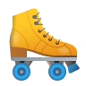

Dragon
El dragón (del latín draco, y este del griego δράκων, drákon 'serpiente') es un ser mitológico que aparece de diversas formas en varias culturas de todo el mundo, con diferentes simbolismos asociados.
Duende
El duende suele asociarse a pequeños seres bonachones, que acostumbran a ayudar en secreto a los humanos, recompensando las buenas acciones y castigando a las personas egoístas y deshonestas.
E
Erizo
Los erizos son pequeños mamíferos cubiertos de púas; pertenecen al orden Eulipotyphla, aunque antiguamente eran considerados del orden Insectívoro, hoy en día obsoleto.
Los erizos habitan Europa, Asia, África.
Edificio
Un edificio es una construcción dedicada a albergar distintas actividades humanas: vivienda, templo, teatro, comercio, etc.
La inventiva humana ha ido mejorando las técnicas de construcción y decoración de sus partes.
Espinaca
La espinaca es una planta anual, dioica, de la familia de las amarantáceas, cultivada como verdura por sus hojas comestibles, grandes y de color verde muy oscuro. Su cultivo se puede realizar en cualquier época del año
F
Flamenco
Los flamencos son una de las aves más admiradas por su esbelta constitución y colorido plumaje. En Mundomar vive una gran colonia de flamencos de la especie Phoenicopterus ruber.
Frutilla
La frutilla es una fruta que, según la región, también se conoce como fresón o fresa. Se trata del fruto comestible de las plantas del género Fragaria. Esta fruta, presenta una buena cantidad de flavonoides y de vitamina C, generando distintos beneficios al organismo.
Fuego
Conjunto de partículas o moléculas incandescentes de materia combustible, capaces de emitir calor y luz, producto de una reacción química de oxidación acelerada. Las llamas son las partes del fuego que emiten luz.
G
Grillo
Los gríllidos son una familia de insectos ortópteros, dentro del suborden Ensifera. A esta familia pertenecen insectos conocidos vulgarmente como grillos. Son, por lo general, insectos de color marrón a negro, con hábitos nocturnos
Girasol
También llamado comúnmente maravilla, mirasol, maíz de teja, acahual es una planta herbácea anual de la familia de las asteráceas originaria de Centro y Norteamérica y cultivada como alimenticia, oleaginosa y ornamental en todo el mundo.
Galaxia
Una galaxia es un conjunto de estrellas, nubes de gas, planetas, polvo cósmico, materia oscura y energía unidas gravitatoriamente en una estructura más o menos definida.
H

Hámster
Son una subfamilia de roedores, se han identificado diecinueve especies actuales, agrupadas en siete géneros. La mayoría son originarias de Oriente Medio y del sureste de los Estados Unidos.
Haba
Vicia faba, conocida como haba, es una especie de planta herbácea anual del género Vicia de la familia Fabaceae. Se cultiva desde tiempos inmemoriales para alimentación humana y animal.
Hada
Son seres que se caracterizan por ser seres con forma humana con la habilidad innata de manipular la magia, con largos periodos de vida y permaneciendo invisibles u ocultos ante el ojo humano.
I
Informática
La informática es la ciencia vinculada al desarrollo de la computadora; es un conjunto de conocimientos, tantos teóricos como prácticos, sobre cómo se construye, cómo funciona y cómo se emplea la información, y los medios de automatización y transmisión para poder tratarla y procesarla.
Iglesia
Una iglesia refiere tanto a una comunidad local como a una institución religiosa que agrupa a cristianos de una misma confesión. En sociología, este término designa a un grupo religioso institucionalizado y con vocación universalista.
Insecticida
Un insecticida es un compuesto químico utilizado para matar insectos. El origen etimológico de la palabra insecticida deriva del latín y significa literalmente matar insectos. Es un tipo de biocida.
J
Jabalí
El jabalí es el primo salvaje del cerdo doméstico. Es un animal vigoroso, de cuerpo grueso y redondo, cabeza grande y alargada terminada en largo y estrecho hocico, la jeta. Tiene las orejas grandes, enhiestas y de forma triangular. El cuerpo del jabalí está cubierto de pelo.
Jacuzzi
Es una gran bañera (o pequeña piscina) que tiene la capacidad de mantener el agua caliente. También se lo conoce como spa. Están provistos de boquillas por las que salen chorros de agua y/o burbujas de aire que masajean el cuerpo.
Jabón
Es un producto que sirve para la higiene personal y para lavar determinados objetos. En nuestros tiempos también es empleado para decorar el cuarto de baño. Se encuentra en pastilla, en polvo o en crema, es diferente entre lo que es un detergente y un champú.
K
Koala
Es redondo, peludito y tiene unos ojos saltones muy tiernos. Al mirarlo parece un oso de peluche, sin embargo. Los koalas son marsupiales. Son nativos de Australia y viven en bosques de eucaliptos. El número de koalas se ha reducido drásticamente debido a la pérdida de hábitat.
Kiwi
El kiwi es un fruto de forma ovoide, de tamaño variable y recubierto de una piel fina de color marrón, ligeramente vellosa. Puede tener de 4 a 7,5cm de longitud por 3,5 a 5cm de anchura y el peso varía de 30-150g en función de la variedad, las condiciones climáticas y del sistema de cultivo.
Kimono
El kimono es el vestido típico de actos solemnes como las bodas, forma parte de la cultura tradicional como la ceremonia del té o la danza japonesa, o de las artes del país como el teatro kabuki o el nō, y es el vestido que utilizan sacerdotes sintoístas, bonzos budistas, geishas, e intérpretes de rakugo entre otros.
L
Lobo
El lobo, de nombre científico Canis lupus, es un tipo de mamífero carnívoro cuadrúpedo, emparentado genéticamente con el perro doméstico (de hecho, se consideran básicamente la misma especie). Vive en manadas y antes de su encuentro con el ser humano, era uno de los depredadores más abundantes de Norteamérica, Eurasia y el Oriente Medio.
Limón
El limón es el fruto en baya del limonero, árbol de hoja perenne y espinoso de la familia de las rutáceas. Este árbol se desarrolla con éxito en los climas templados y tropicales, Según su tamaño, los limones se pueden clasificar en: pequeños, medianos y grandes; y por su color en verdes y amarillos.
Ladrillo
Un ladrillo es un material de construcción, normalmente cerámico y con forma ortoédrica, cuyas dimensiones más normales permiten que un operario lo pueda colocar con una sola mano. Los ladrillos se emplean en la construcción en general.
M
Mamut
El mamut es una especie ya extinta, pertenece a la familia de los elefantes y era un mamífero proboscídeo de gran tamaño. Se caracterizaba esencialmente por tener su cabeza abultada, extensos colmillos curvados y por ser unos paquidermos muy musculosos.
Mango
El mango es una fruta tropical de origen asiático, de exquisito sabor, que posee unas excelentes cualidades nutricionales y que está indicada para todas las edades. Su cultivo está extendido por zonas de clima tropical y subtropical de todo el mundo.
Molino
Es un tipo de maquinaria que sirve para aprovechar la energía cinética. Esa energía puede provenir del viento (molino eólico), del agua (molino hidráulico), o de la tracción animal, para llevar a cabo tareas mecánicas como moler materiales o generar electricidad.
N
Nutria;
La nutria es un mamífero con cuerpo de mustélido: alargado y esbelto, macizo y de patas cortas. La cabeza es aplastada y con el hocico ancho y las orejas pequeñas y cubiertas de pelos y que, al igual que las narinas, puede cerrar herméticamente cuando se sumerge en el agua. El pelaje es denso y pardo.
Nuez
La nuez es el fruto del nogal, de forma redondeada u ovoide, con una cáscara dura y rugosa de color pardo rojiza. La parte comestible de su interior tiene un sabor dulce particular. La parte comestible de la nuez recuerda por su forma al cerebro y gracias a su contenido en vitaminas del grupo B, son buenas para la memoria.
Nido
Un nido es una estructura más o menos compleja utilizada por algunos animales, bien para procrear y criar a su descendencia, bien para refugiarse, para dormir, hibernar, etc. No todos los animales construyen o usan nidos. Los que los hacen pertenecen a clases diversas: arácnidos, insectos, peces osteictios o seláceos, aves, reptiles y mamíferos.
Ñ

Ñandu
El Ñandú es un ave no voladora y exclusivamente sudamericana. Sus patas, que terminan en tres dedos, son fuertes y están adaptadas para la carrera. El plumaje es de color marrón grisáceo, tiene el cuello largo, la cabeza pequeña y un pico más bien fuerte.

Ñu
Es un miembro de la familia de los antílopes, aunque su complexión pesada y sus cuartos delanteros desproporcionadamente grandes hacen que se parezca mas a los bovinos. Pueden alcanzar las 2,5 metros de altura y pesar alrededor de 275 kg.
Ñoño
Ñoño, es un personaje de la serie de televisión mexicana El Chavo del Ocho, interpretado por Édgar Vivar. Es el único hijo del Señor Barriga, es un buen estudiante y tiene buen corazón, pero como la mayoría de los niños, es ingenuo.
O
Orangután
El orangután es un género de primates homínidos. Se distinguen de los simios africanos por el pelaje de color rojizo y una constitución más adaptada a la vida arbórea. Además, tienen el estilo de vida más solitario de todos los monos.
Orégano
El orégano es uno de los clásicos de la dieta mediterránea, condimento estrella de muchos platos que se ha utilizado desde tiempos inmemoriales para dar sabor a los alimentos. Y aunque sea Italia y su pizza los que le han convertido en un imprescindible en cualquier cocina en todo el mundo.
Ola
Una ola es una ondulación de agua sobre la superficie del mar. Las olas viajan muchos kilómetros por la superficie del mar a velocidades muy variadas y generalmente mueren en las playas. Normalmente, las olas se forman por el viento.
P
Panda
El oso panda es un mamífero exclusivo del sudeste chino y hace su vida en los bosques templados, donde puede encontrar su principal fuente de alimento, el Bambú. Sus cuatro patas están cubiertas de pelaje negro y tienen una banda negra alrededor de los hombros, así como los ojos y las orejas.
Palmera
Las palmeras son plantas arborescentes y no verdaderos árboles, ya que no forman madera o leño, es decir, no tienen crecimiento secundario en grosor por el que se forman los anillos típicos de crecimiento anual.

Patín
Un patín es un aparato que sirve para deslizarse sobre hielo o pavimento liso, posee una plancha que se engancha al calzado bajo la suela y lleva una especie de cuchilla o ruedas, según la superficie donde se vaya a deslizar.
Q
Quinoa
La quinoa es un pseudocereal muy nutritivo. Es el único alimento vegetal que contiene todos los aminoácidos y vitaminas esenciales. Puede ser consumida sin problemas al no contener gluten.
Queso
El queso es un alimento sólido que se obtiene por maduración de la cuajada de la leche animal una vez eliminado el suero; sus diferentes variedades dependen del origen de la leche empleada.
Quena
La Quena es un instrumento de viento de bisel, usado de modo tradicional por los habitantes de los Andes centrales. Su origen y desarrollo corresponden a sociedades andinas precolombinas.
R
Rinoceronte
El rinoceronte es uno de los tres animales más grandes del mundo. Pertenece a la orden de los perisodáctilos, es herbívoro y habita en algunas zonas de África y en el sur de Asia. Pesan entre 800 y 1.400 kilos y miden 1,70 metros de media. A pesar de que no tienen un gran sentido de la vista, estos animales suelen salir en busca de comida cuando cae la noche para protegerse del calor diurno. Viven unos 60 años de media en condiciones favorables. Su nombre en griego significa "nariz" y "cuerno", su rasgo más característico
Ramo
Un ramo, en este sentido, es una estructura que surge del tronco de una planta. En ella se originan los frutos, las hojas, etc. Se denomina ramo, por otra parte, a una agrupación de hierbas o flores. Los ramos pueden usarse en distintos contextos de acuerdo a sus características.
Los ramos de flores son obsequios frecuentes en una pareja, sobre todo cuando un hombre desea agasajar a una integrante del género femenino. Este regalo incluso puede formar parte de un plan de seducción, como muestra de interés.
Radar
El radar (término derivado del acrónimo inglés radio detection and ranging, “detección y distanciometría de radio”) es un sistema que usa ondas electromagnéticas para medir distancias, altitudes, direcciones y velocidades de objetos como aeronaves, barcos, vehículos motorizados, formaciones meteorológicas y el propio terreno. Su funcionamiento se basa en emitir un impulso de radio, que se refleja en el objetivo y se recibe típicamente en la misma posición del emisor.
S
Serpiente
Las serpientes, también conocidas como ofidios, son reptiles sin patas y de cuerpo extendido.
Las serpientes, pertenecientes al suborden de las Serpentes, se cree que provienen de algún tipo de lagarto, aunque su origen exacto aún no ha sido confirmado por los científicos.
Sandía
La sandía es un fruto grande y de forma más o menos esférica que suele consumirse cruda como postre. Su pulpa es de color rojizo o amarillento y de sabor dulce. Resulta un alimento muy refrescante que aporta muy pocas calorías al organismo.
Silla
La silla es un mueble que suele tener un respaldo, generalmente cuenta con tres o cuatro apoyos y su finalidad es la de servir de asiento a una persona. Las sillas pueden estar elaboradas con diferentes materiales: madera, hierro, forja, plástico.
T
Tiburón
Pez marino carnívoro de esqueleto cartilaginoso, cuerpo alargado y esbelto, entre cinco y siete aberturas branquiales, una o dos aletas dorsales, una aleta caudal heterocerca, cabeza aplanada con la boca muy grande en su parte inferior, y dientes muy afilados.
Palmera
El tomate es el fruto de la planta conocida como tomatera, una especie herbácea que pertenece a la familia de las solanáceas y es nativa del continente americano. Los tomates son bayas de color rojizo que se caracterizan por su pulpa con múltiples semillas y por su jugo.

Patín
El tornillo es una pieza metálica que tiene como función unir dos o más elementos. Esta pieza está compuesta principalmente por tres partes: cabeza, cuello y rosca.
Este elemento permite que una o varias piezas estén unidas o sujetas (atornilladas) a través de un orificio roscado en las piezas.
U
Unicornio
El unicornio es una criatura mitológica del folclore europeo representada habitualmente como un caballo blanco con patas de antílope, ojos y pelo de cabra y un cuerno en la frente. En las representaciones modernas, sin embargo, es idéntico a un caballo.
Uva
La uva es la denominación que reciben los frutos formados en los racimos de la vid. Es usada para su fermentación, ya que ésta da lugar al vino. Sembradas en viñas, crecen agrupadas en las parras de las vides entre seis y trescientas uvas por racimo.

Uña
La uña es una estructura protectora formada por dos componentes principales: queratina, que le aporta su propiedad de dureza, y calcio. Las uñas crecen 0,1 milímetros cada día.
V
Vaca
Mamífero rumiante bóvido, hembra, de unos 150 cm de altura y 250 cm de longitud, cuerpo muy robusto, pelo corto, cabeza gruesa provista de dos cuernos curvos y puntiagudos, hocico ancho, papada en el pecho, y cola larga con un mechón en el extremo; de él se aprovechan la leche, la carne y la piel.
Vino
El vino es una bebida hecha de uva, mediante la fermentación alcohólica de su mosto o zumo. La fermentación se produce por la acción metabólica de levaduras, que transforman los azúcares naturales del fruto en etanol.
Vela
Una vela, candela, espelma o bujía es una fuente de iluminación, consistente en una mecha que asciende por el interior de una barra de combustible sólido, como puede ser la cera, la grasa, las ceras vegetales, animales o la parafina.
W
Waffle
Wafle una especie de galleta con masa crujiente parecida a un barquillo, de tipo oblea, origen belga que se cocina entre dos planchas calientes. El gofre tiene apariencia de rejilla resultado del molde de la gofrera.
Whisky
Wisky es una bebida alcohólica obtenida por la destilación de la malta fermentada de cereales como cebada, trigo, centeno y maíz, y su posterior añejamiento en barriles de madera, tradicionalmente de roble blanco.
Wi-Fi
Wi-Fi es la tecnología móvil que se usa para conectar computadoras, tablets, smartphones y otros dispositivos a Internet. Wi-Fi es la señal de radio que se envía desde un enrutador inalámbrico a un dispositivo cercano.
X
Xilofono
Instrumento musical de percusión formado por una serie de láminas de madera horizontalmente y ordenadas según su tamaño que, al ser golpeadas, emiten sonidos correspondientes a diferentes notas musicales; se toca con dos o cuatro macillas.
Ximena
el significado del nombre Ximena es “la que escucha” y hace referencia a una mujer que sabe escuchar y es atenta. Los nombres Jimena, Gimena y Ximena son la versión femenina del nombre Jimeno, que tiene su origen en el antropónimo Simón.
Xiaomi
Es una empresa china dedicada al desarrollo de equipos electrónicos, tanto telefónicos como de diversos artículos para el hogar. La compañía se ha abierto paso al mercado mundial inaugurando varias tiendas físicas en determinados países.
Y

Yo-yo
Juguete formado por dos pequeños discos unidos en su centro por una barrita con un cordón atado y enrollado a esta; se juega sujetando el extremo del cordón con un dedo, generalmente el del medio, y dejando caer la pieza formada por los dos discos, de modo que baje y suba según se desenrolle o se vuelva a enrollar el cordón.
Yate
Un yate es todo buque o embarcación de recreo. Se define embarcación de recreo como toda aquella de cualquier tipo, con independencia de su medio de propulsión, cuyo casco tenga una eslora comprendida entre 2,5 y hasta 24 metros, medida según los criterios en las normas armonizadas aplicables y proyectada para fines deportivos o de ocio.
Yunque
Es una herramienta fabricada en hierro que consiste en un bloque macizo, plano en su parte superior y en cuyos extremos tiene dos salientes de forma cónica. Su peso varía en función del tipo de trabajo desde 2 kg hasta 200 kg.
Se usa para la manipulación o forja de metales y lo utilizan desde herreros hasta joyeros.
Z
Zorro
Mamífero cánido de tamaño mediano, cuerpo esbelto, patas robustas y algo cortas, orejas erguidas, hocico alargado y puntiagudo, cola larga con pelo abundante y largo, y pelaje de color rojizo; es un astuto depredador; hay distintas especies que habitan en bosques de casi todo el mundo; su piel es muy apreciada en peletería.
Zanahoria
La zanahoria es una planta de la que se ingiere la raíz, pudiendo medir la planta hasta un metro de altura. Se trata de una de las hortalizas con mayor tradición medicinal como todos conocemos, especialmente beneficiosa a nivel ocular. Ha sido cultivada y consumida desde hace siglos por griegos y romanos.
Zafiro
La palabra zafiro proviene del término latino sapphirus y hace referencia a una gema azulada que pertenece a la familia de los corindones. Se trata de una de las piedras preciosas más relevantes y valiosas del planeta, junto con los diamantes, los rubíes y las esmeraldas.